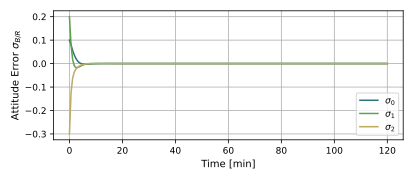
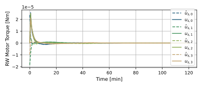
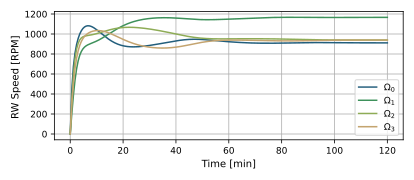
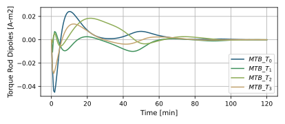

scenarioMtbMomentumManagementSimple
Overview
Demonstrates how to use magnetic torque bars to drive the net angular momentum of the RW cluster to zero rather than driving the individual wheels speeds to desired values as in scenarioMtbMomentumManagement. As in this scenario, the spacecraft is initialized with a small tumble and the Module: inertial3D module is used to stabilize to and hold a desired orientation.
In this script a series of modules are used to control the momentum of the reaction wheels and interface with magnetic torque bars: Module: mtbMomentumManagementSimple, Module: torque2Dipole, Module: dipoleMapping, and Module: mtbFeedforward. Four magnetic torque bars (MTBs) (see Module: MtbEffector) are included to provide a magnetic torque. It’s important to point out that driving the net momentum of the reaction wheels to zero does not necessarily mean driving the individual reaction wheel speeds to zero because the wheels can be spun up in their null space, if it exists, and still have a net momentum of zero. As a result, the Module: rwNullSpace module is used to control the null space of the wheels. The basic spacecraft setup with RWs is similar to that seen in scenarioAttitudeFeedbackRW. A magnetic field is simulated, and a three-axis magnetometer (TAM) sensor device is added. The spacecraft is setup to stabilize and point in a fixed inertial direction while this RW momentum control is engaged.
The script is found in the folder basilisk/examples and executed by using:
python3 scenarioMtbMomentumManagementSimple.py
Illustration of Simulation Results
show_plots = True
The first plot illustrates that the Module: inertial3D module is able to achieve a stable inertial pointing.
The next plots illustrate the RW states. The motor torque are initially large to stabilize the spacecraft orientation. After this they return to small values that are compensating for the magnetic momentum dumping. Finally they settle to zero as the momentum dumping is done and the RW null motion module has driven the RW speeds as close as it could to the desired values.
 The following plot illustrates the MTB commanded dipoles. They first are active to reduce the net RW momentum and then settle to zero.
- scenarioMtbMomentumManagementSimple.plot_attitude_error(timeData, dataSigmaBR)[source]
Plot the attitude errors.
- scenarioMtbMomentumManagementSimple.plot_data_mtb_momentum_management(timeData, dataMtbMomentumManegement, numMTB)[source]
Plot the magnetic field.
- scenarioMtbMomentumManagementSimple.plot_data_rw_motor_torque_desired(dataUsReq, tauRequested_W, numRW)[source]
Plot the RW desired motor torques.
- scenarioMtbMomentumManagementSimple.plot_data_tam(timeData, dataTam)[source]
Plot the magnetic field.
- scenarioMtbMomentumManagementSimple.plot_data_tam_comm(timeData, dataTamComm)[source]
Plot the magnetic field.
- scenarioMtbMomentumManagementSimple.plot_magnetic_field(timeData, dataMagField)[source]
Plot the magnetic field.
- scenarioMtbMomentumManagementSimple.plot_rate_error(timeData, dataOmegaBR)[source]
Plot the body angular velocity rate tracking errors.
- scenarioMtbMomentumManagementSimple.plot_rw_cmd_torque(timeData, dataUsReq, numRW)[source]
Plot the RW command torques.
- scenarioMtbMomentumManagementSimple.plot_rw_motor_torque(timeData, dataUsReq, dataRW, numRW)[source]
Plot the RW actual motor torques.